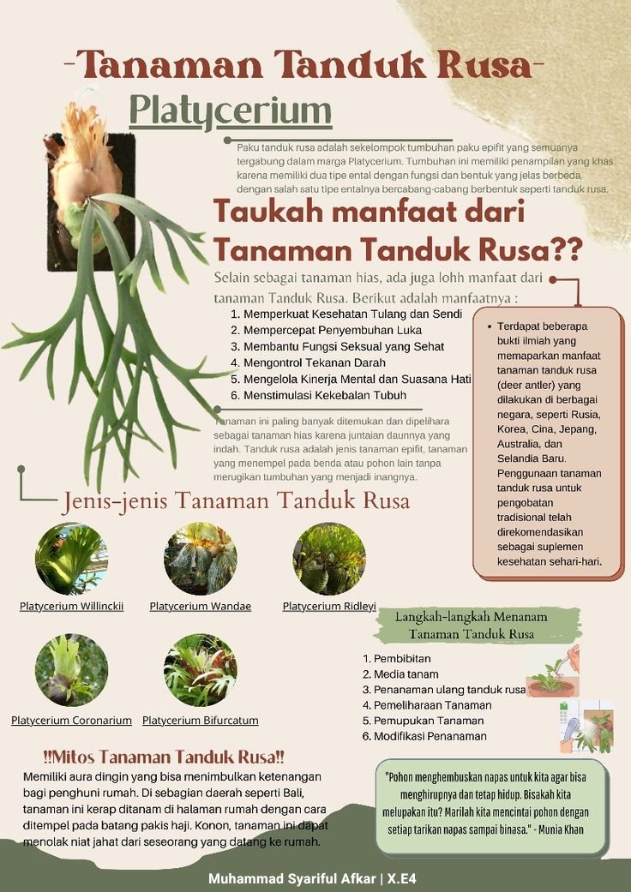

Spesies dipilih
Platycerium Willinckii
Memiliki daun menjuntai dan bercabang panjang. Jenis ini sering dipilih untuk tampilan gantung karena siluetnya dramatis saat tanaman tumbuh dewasa.

Tanaman epifit hias
Platycerium
Paku tanduk rusa adalah kelompok tumbuhan paku epifit yang tumbuh menempel pada media seperti batang pohon. Bentuk daunnya bercabang menyerupai tanduk rusa, sehingga menjadi tanaman hias yang kuat secara visual dan populer untuk area rumah tropis.
Tahukah kamu?
Selain sebagai tanaman hias, tanduk rusa sering dikaitkan dengan pemanfaatan tradisional. Gunakan informasi ini sebagai wawasan umum, bukan pengganti saran tenaga kesehatan.
Jenis-jenis
Spesies dipilih
Memiliki daun menjuntai dan bercabang panjang. Jenis ini sering dipilih untuk tampilan gantung karena siluetnya dramatis saat tanaman tumbuh dewasa.
Perawatan dasar
Pilih bibit sehat dengan daun segar dan akar yang menempel baik pada media. Hindari bagian yang busuk atau terlalu kering.
Mitos tanaman tanduk rusa
Di beberapa daerah, tanaman ini dipercaya menghadirkan ketenangan rumah. Ada pula kebiasaan menempelkan tanduk rusa pada batang pakis haji sebagai simbol perlindungan.
"Pohon menghembuskan napas untuk kita agar bisa menghirupnya dan tetap hidup."
Munia Khan